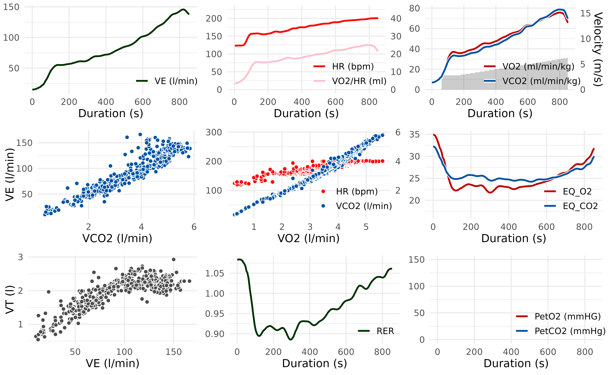
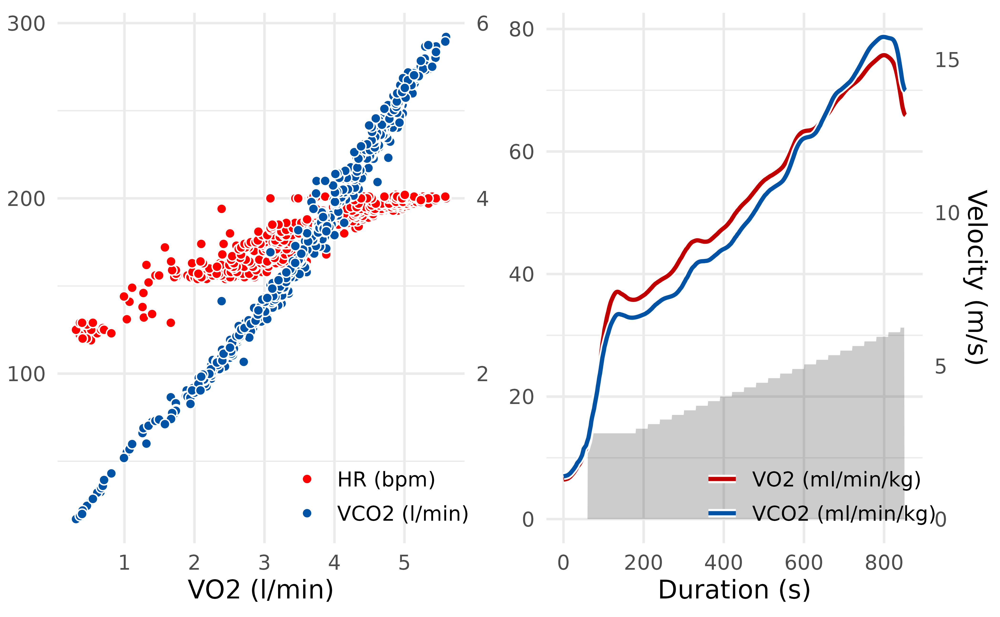
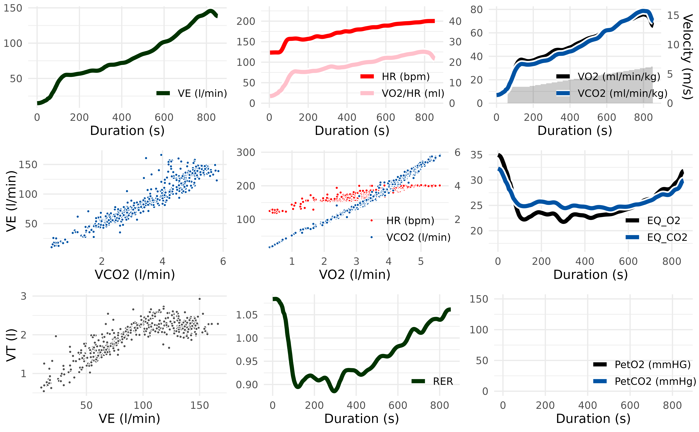

Different measuring devices and analysis software lead to opaque results in measuring gas exchange parameters. To make exercise science more transparent and reproducible, the spiro package offers a standardized workflow for data from metabolic carts.
This vignette provides you information on how to summarize and plot data previously imported and processed by spiro().
Load the data
library(spiro)
# import and process example data
file <- spiro_example("zan_gxt")
gxt_data <- spiro(file)
gxt_data
#> load step time VO2 VCO2 RR VT VE HR PetO2 PetCO2 VO2_rel
#> 1 0 0 1 NA NA NA NA NA NA NA NA NA
#> 2 0 0 2 NA NA NA NA NA NA NA NA NA
#> 3 0 0 3 NA NA NA NA NA NA NA NA NA
#> 4 0 0 4 399.08 323.70 13.94 0.77 10.72 NA NA NA 6.05
#> 5 0 0 5 409.83 330.26 14.50 0.74 10.66 NA NA NA 6.21
#> 6 0 0 6 420.58 336.82 15.06 0.71 10.60 NA NA NA 6.37
#> 7 0 0 7 431.33 343.37 15.63 0.68 10.53 NA NA NA 6.54
#> 8 0 0 8 435.30 346.51 16.06 0.69 11.04 NA NA NA 6.60
#> 9 0 0 9 437.02 348.52 16.46 0.71 11.74 NA NA NA 6.62
#> 10 0 0 10 438.74 350.53 16.85 0.74 12.44 NA NA NA 6.65
#> VCO2_rel RE RER CHO FO
#> 1 NA NA NA NA NA
#> 2 NA NA NA NA NA
#> 3 NA NA NA NA NA
#> 4 4.90 NA 0.81 0.20 0.13
#> 5 5.00 NA 0.81 0.19 0.13
#> 6 5.10 NA 0.80 0.19 0.14
#> 7 5.20 NA 0.80 0.18 0.15
#> 8 5.25 NA 0.80 0.18 0.15
#> 9 5.28 NA 0.80 0.19 0.15
#> 10 5.31 NA 0.80 0.19 0.15
#> ... with 2999 more rowsStepwise summary with spiro_summary()
In the analysis of gas exchange data, often mean parameters for each performed load step are of interest. To ensure the presence of a metabolic steady state, the end of each step is used for calculations.
spiro_summary(gxt_data, interval = 120)
#> for pre-measures, interval was set to length of measures (60 seconds)
#> step_number duration load VO2 VCO2 VE HR PetO2 PetCO2 VO2_rel
#> 1 0 60 0.0 500.19 411.74 13.03 NA NA NA 7.58
#> 2 1 300 2.0 1860.92 1585.75 39.87 NA NA NA 28.20
#> 3 2 300 2.4 2097.82 1805.27 44.63 NA NA NA 31.79
#> 4 3 300 2.8 2413.01 2122.17 52.63 NA NA NA 36.56
#> 5 4 300 3.2 2710.68 2319.93 57.19 NA NA NA 41.07
#> 6 5 300 3.6 3048.75 2684.87 67.45 NA NA NA 46.19
#> 7 6 300 4.0 3404.02 3026.70 75.91 NA NA NA 51.58
#> 8 7 300 4.4 3724.37 3383.64 88.36 NA NA NA 56.43
#> 9 8 300 4.8 4223.82 3993.55 106.44 NA NA NA 64.00
#> 10 9 300 5.2 4573.91 4488.36 127.54 NA NA NA 69.30
#> RE RER CHO FO
#> 1 NA 0.82 0.27 0.15
#> 2 234.97 0.85 1.27 0.46
#> 3 220.73 0.86 1.51 0.49
#> 4 217.62 0.88 1.95 0.48
#> 5 213.91 0.86 1.89 0.65
#> 6 213.86 0.88 2.47 0.60
#> 7 214.90 0.89 2.90 0.62
#> 8 213.75 0.91 3.50 0.56
#> 9 222.21 0.95 4.68 0.37
#> 10 222.12 0.98 5.82 0.12The length of the computational interval (in seconds) can be modified with the interval argument. If the interval exceeds the length of any step, it will be shortened for these steps displaying a note. You can turn such messages off with setting the argument quiet = TRUE.
Maximal parameter values with spiro_max()
For some types of exercise tests it may be preferable to get maximal values of the measured parameters (e.g., the maximum oxygen uptake VO2max). spiro_max() calculates these after smoothing the data.
spiro_max(gxt_data, smooth = 30)
#> VO2 VCO2 VE VO2_rel RER HR
#> 1 4732.28 4640.75 129.62 71.7 0.99 NAThe smooth argument controls the interval and method for the data smoothing. Different smoothing methods are available: Moving averages over fixed time intervals (e.g. smooth = 30 for 30 seconds), moving averages over a fixed number of breaths (e.g. smooth = "30b" for 30 breaths) or digital filters (e.g. smooth = "0.04fz3" for a third-order zero-phase low-pass Butterworth filter with a cut-off frequency of 0.04 Hz). Per default the smoothing will not apply to the heart rate values, but you can enable this behavior with hr_smooth = TRUE.
Plotting the data
The spiro package lets you visualize data from cardiopulmonary exercise testing: With spiro_plot() you can display the traditional Wasserman 9-Panel Plot.
# load example data
data <- spiro(spiro_example("zan_ramp"), hr_file = spiro_example("hr_ramp.tcx"))
spiro_plot(data)
You can individually select and combine panels of the 9-Panel Plot by setting the which argument.
# Plot only V-Slope (Panel 5) and VO2/VCO2 over time (Panel 3)
spiro_plot(data, which = c(5,3))
Data over time (Panel 1,2,3,6,8,9) will be displayed smoothed, as determined via the smooth argument. The other panels (4,5,7) use the raw breath-by-breath data for visualization.
You can control the appearance of the plots in spiro_plot(). Use the style_args argument to control the size and color of points and lines.
# Change size of points, width of lines and color of VO2 points/lines
spiro_plot(
data,
style_args = list(
size = 1,
linewidth = 2,
color_VO2 = "black"
)
)
Use the base_size argument to change the plot base size. You can pass other style arguments to ggplot::theme() via the style_args argument for further customization.
# Change base size and axis label font
spiro_plot(
data,
base_size = 9,
style_args = list(
axis.title = ggplot2::element_text(face = "italic", colour = "blue")
)
)